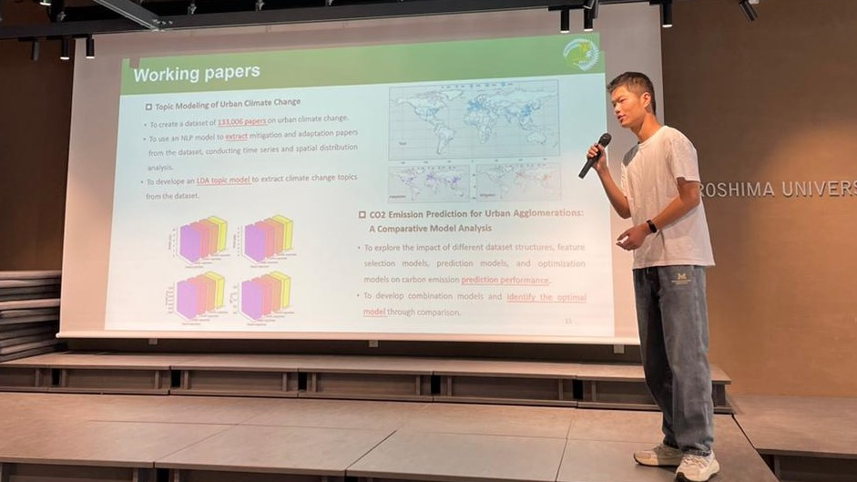

Yukai Jin is a PhD candidate at the Urban Environmental Science Lab of Hiroshima University and a New Spring Research Fellow. His research focuses on urban climate change, using machine learning to understand and forecast greenhouse gas emissions in cities. Before Hiroshima University, he earned a master's degree in engineering from Guangdong University of Technology. He has published several papers, including one highly cited article, and recently spent three months as a visiting scholar at Yale University working on urban climate modeling.
Latest News
The website is officially launched!
The site now provides information on my projects and research — feel free to browse and stay updated with the latest developments.
Our latest paper has been published in RSER!
Machine learning for predicting urban greenhouse gas emissions: A systematic literature review, published in Renewable and Sustainable Energy Reviews (Vol. 215, 2025), reviews 75 studies from 2003–2023 on machine learning models and drivers of urban GHG emissions. Read it on ScienceDirect.
Publications
Machine learning for predicting urban greenhouse gas emissions: A systematic literature review
Abstract
Greenhouse gases play a crucial role in shaping urban climate patterns and dynamics. Using machine learning methods offers opportunities for predicting greenhouse gas emissions in cities, both now and in the future. Here, we review 75 papers from 2003 to 2023 that utilized machine learning to forecast urban greenhouse gas emissions. We focus on two aspects: the models used and the driving factors of emissions. Across all models, R² range from 0.5231 to 0.9989, MAPE range from 0.3017% to 26.3%. Hybrid and neural network models emerged as the most popular choices. We propose three key recommendations to enhance the accuracy and reliability of future machine learning models: (1) establish criteria for evaluating influential factors and model selection, (2) enhance spatial prediction in machine learning by optimization models, and (3) explore and compare how greenhouse gas prediction models perform across diverse urban settings.
Analyzing particulate matter characteristics of the subway system: Case study of Guangzhou
Abstract
This study aims to: (1) evaluate the concentration distribution of particulate matter in the Guangzhou metro system; (2) compare particulate matter concentrations under different conditions, including time, season, location, subway lines, and sampling height; (3) compare the concentrations with existing research and propose future improvement measures. Spatial factors were significantly correlated with particulate matter concentration, and stratification of PM10 was identified at various heights in both carriages and platforms — the PM10 average concentration at 80cm is 14% higher than at 120cm and 13% higher than at 150cm. We suggest mitigation measures for particulate matter in both carriage and platform environments.
Carbon emission prediction models: A review
Abstract
Amidst growing concerns over the greenhouse effect, establishing effective Carbon Emission Prediction Models (CEPMs) is imperative for climate change mitigation. A review of 147 CEPM studies revealed three predominant functions — prediction, optimization, and prediction factor selection. Statistical models were the most prevalent (75 instances), followed by neural network models (21.8%), with a consistent rise in neural network usage from 2019 to 2022. A majority of CEPMs incorporated optimized approaches, with 94.4% utilizing metaheuristic models. We summarize the pros and cons of existing models, classify the factors that influence carbon emissions, clarify research objectives in CEPM, and assess model evaluation methods and the spatial/temporal scales of existing research.
Thermography evaluation of defect characteristics of building envelopes in urban villages in Guangzhou, China
Abstract
In many cities, the building envelope is deteriorating and aging. A 3-day infrared thermography (IRT) experiment was conducted on 5 buildings (11 rooms) in an urban village in Guangzhou, China. Three types of building defects were found: conduction thermal defects, ventilation defects, and moisture. An improved temperature factor framework (ITF) is proposed to evaluate conduction thermal defects. Conduction thermal defects were the most common, occurring 28 times across five residential buildings, mainly at the joints of different walls and structures. Orientation was found to have an important effect on thermal defects, and thermal bridges were more likely to occur on extended floors built on the original building.
Predicting long-term building energy consumption using multiple feature clustering and machine learning: applications in Shanghai, China
Abstract
As urbanization progresses, global building energy consumption is on the rise, emphasizing the need for a dependable energy consumption prediction model. This study presents a multi-stage machine learning approach comprising a clustering decomposition model (GMM), a prediction model (XGBoost), and an optimization model (PSO). Validation is conducted using a dataset of 458,836 hourly records spanning three years from 20 office buildings in Shanghai, China. The proposed model consistently achieves an R² exceeding 0.85 across diverse test sets, offering insights for future building design and energy management strategies.
Projects

Experience
Work Experience
Visiting Assistant Research
- Supervised by Prof. Karen Seto.
- Built models predicting CO₂ emissions for global cities from 2021 to 2100.
Education
PhD Candidate
Hiroshima University
- Supervised by Prof. Ayyoob Sharifi.
- Published 2 papers in Elsevier Q1 journals, including 1 highly cited paper.
- Presented 1 paper at the ICAE 2024 conference.
MEng
Guangdong University of Technology
- Published 1 paper in an Elsevier Q1 journal.
- Published 3 papers in Chinese journals.
BEng
Jiangxi Agricultural University
Awards
| 2025 | HU Spring Award |
| 2024–26 | New Spring Fellowship |
| 2023–24 | SmaSo-X Scholarship |
Certificates
| Nov 2023 | Neural Networks and Deep Learning · Coursera |
| Jul 2023 | Blockchain Fundamentals · edX |
| Jan 2023 | Object-Oriented Programming in R · DataCamp |
Skills & Hobbies
- Python
- Data Science
- SQL
- Hiking
- Cats
- Photography
Languages
- Chinese Native
- English Professional
- Japanese Intermediate